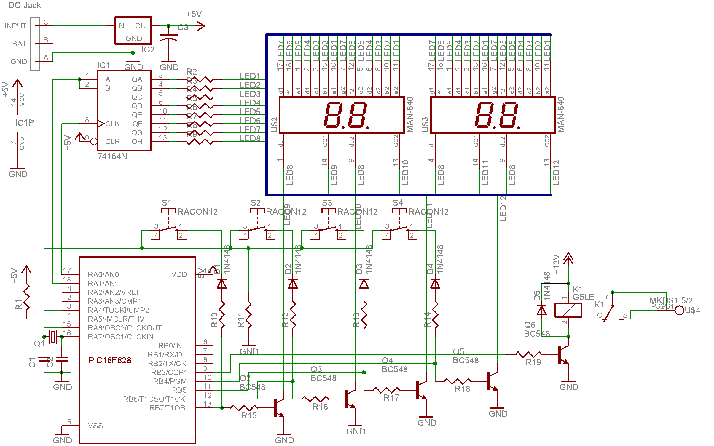
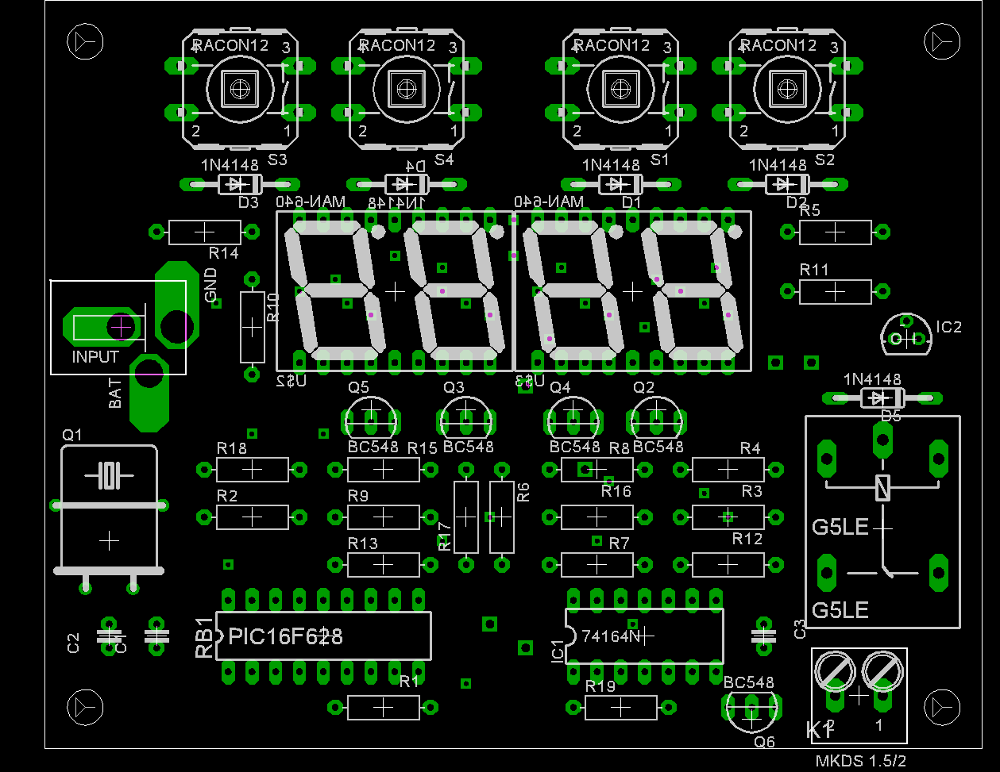

| One of my
favourites PIC websites |
|
|
Timer on PIC16F628
Pic Timer on the Web
This is a 24 hours clock which may be programmed to turn on and off some
device at proogrammed time. I made it because I'm too lazy to turn light in my
aquarium in the morning and turn it off in the evening. Still have to do
automatic fish feeding system - this will be further development in some future.
Now, back to the project.
It has very basic schematic and most important is a program written in
assembler. Obviously, I've used Microchip's MPASM. For drawing schematic
I'm using Eagle from http://www.cadsoftusa.com/ Since I left
embedded technology sector I enjoy doing some projects as amateur, so give
me some discount on this. :)
|
The clock has 4 buttons for:
increment hours (1)
increment minutes (2)
mode-program time ON (3)
mode-program time OFF (4)
There is 4 clock modes.
clock
programming clock
programming ON time
Programmin OFF time |

|
New mode is set by pressing appropriate button, the new mode is indicated
during approximately 1 second with symbols ClOC, Prog,
Pron, ProF respectively. Pressing button (1) or button (2) sets
programming clock mode and will increment hours or minutes respectively every
second. Pressing button (3) or (4) will indicate time ON or time OFF. To set the
time use button (1) or (2) while pressing (3) or (4). Pressing buttons (3) and
(4) altogether will clear seconds of the clock and stop the clock until the
buttons are released. Useful to correct exact time. 16 ms program delay used for
debounce. 4 pins of PIC16F628 used for both - dynamic 7 segment LED indication
and keyboard scanning. Program works of timer TMR0 interrupts every 4 ms. Every
cycle new LED digit is displayed, and keyboard status read. Debounce delay (both
- for pressing and releasing key) is calcualted for every key and is 4 cycles.
When new second is calculated subroutine to chek time ON and OFF is called and
depending on result status of the ON/OFF relay may be changed.
There is not enough pins to organize dynamic indication, so CD4015
shift register is used. May be used any similar, of course, but I've used what I
had at the moment. Relay may be used any apropriate. In addition I did not use
RB0, RB1, RB2 for futhure development - it may have RS232 connection as well as
accept external interrupts through RB0. Adding automatic fish feeding system may
require significant amount of time dedicated to this project so I leave it to
the future. Meanwhile you may download the project in current state.
pictimer.zip
January, 25, 2004
Changed CD4015 for 74HC164, which is more powerfull. Made some small changes.
Just finished development of printed circuit board. Will sell in coming weeks PCB and
kit. If interested, visit the page
http://www.radier.ca/pic/pictimer.php?board in 1-2-3 weeks. Thanks.
The PCB is 3.9 inch width and 3.1 inch height.
This is the parts layout picture.
Please, note - 7 segment LED indicators and 4 buttons at the top of the picture (RACON12)
are the only elements located on the top. Everything else is on other side.

send any comments/questions to Dmitriy Fitisov
{kind=link}
{kind=link}